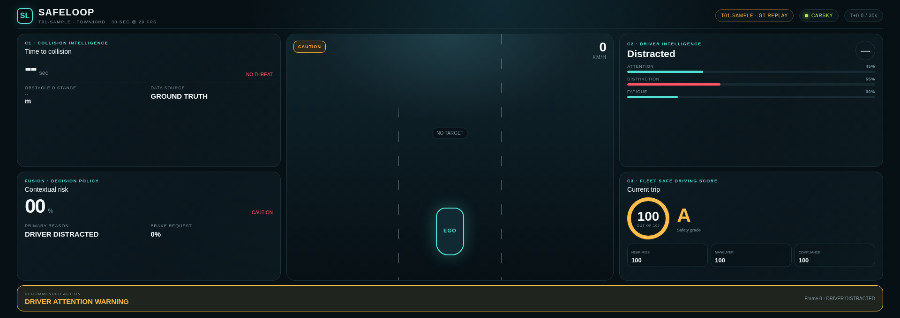

Hợp nhất rủi ro va chạm, trạng thái người lái và điểm an toàn chuyến đi trên nền tảng CarSky.
SafeLoop là hệ thống hỗ trợ lái xe chạy trên nền tảng xe kết nối (Connected Car): nhận kết quả từ C1 dự đoán nguy cơ va chạm và C2 nhận biết trạng thái người lái, hợp nhất theo ngữ cảnh thành cảnh báo ưu tiên, đồng thời tích lũy C3 Safe Driving Score cho tài xế và đội xe.
Dự đoán thời gian còn lại trước va chạm (TTC) từ video bằng V-JEPA2 và head lai classification–regression; ưu tiên độ chính xác vùng TTC nguy hiểm.
ĐÃ ĐO TRÊN DỮ LIỆU LƯU SẴNMobileNetV3-Large + hai nhánh LSTM causal, xuất một trong năm trạng thái với quy tắc an toàn cho microsleep.
ĐÃ ĐO THEO THỜI GIAN THỰCQuy tắc kết hợp TTC, khoảng cách, distraction/fatigue và điểm chuyến đi để chọn cảnh báo có lý do.
MÔ PHỎNG / PHÁT LẠI NHÃN CHUẨN| Người dùng | Tài xế, người quản lý đội xe, hãng xe/nhà cung cấp màn hình trên xe (IVI); mở rộng cho bảo hiểm theo sự đồng ý của người dùng. |
|---|---|
| Nhiệm vụ chính | Phát hiện sớm tình huống “nguy cơ phía trước + tài xế chưa sẵn sàng”, ưu tiên cảnh báo và ghi lại bằng chứng sau chuyến. |
| Dữ liệu vào / Kết quả | Video đường, video cabin, dữ liệu vận hành xe → TTC, trạng thái người lái, mức rủi ro tổng hợp, hành động khuyến nghị, điểm chuyến đi. |
| Điểm tích hợp | CarSky Central Broker (VSS), Script Node, Android Automotive Screen/WebView; bước tiếp theo là nối mô hình thật qua bộ chuyển đổi dữ liệu. |
| Giá trị khác biệt | Hợp nhất C1+C2 thành một quy trình khép kín có thể giải thích; cùng một chuỗi bằng chứng phục vụ cảnh báo tức thời và gợi ý cải thiện sau chuyến đi. |
| Cam kết trong đề xuất | Hiện trạng đợt 2 | Bằng chứng / phần còn thiếu |
|---|---|---|
| C1: thời gian còn lại trước va chạm (TTC) | MÔ HÌNH THỬ NGHIỆM Gói model kết hợp V-JEPA2; đánh giá trên 6 bộ dữ liệu mẫu. | Composite 53.2; MAE Critical 1.780 s. Chưa đạt thời gian xử lý theo thời gian thực trên T4. |
| C2: 5 trạng thái người lái | MÔ HÌNH THỬ NGHIỆM Pipeline causal, đặt lại trạng thái sau mỗi chuyến đi. | Composite 81.1; 27.65 FPS trên T4; cần tiếp tục kiểm thử domain shift. |
| Mức rủi ro tổng hợp theo tình huống | BẢN THỬ NGHIỆM Quy tắc kết hợp có nêu lý do và hành động. | Đã chạy bằng dữ liệu mô phỏng và nhãn chuẩn T01; chưa hiệu chỉnh bằng kết quả của mô hình thật. |
| Màn hình theo dõi trực tiếp / nhật ký cảnh báo | BẢN DEMO THU GỌN AAOS 1920×1080; C1/C2/C3 cùng màn hình. | Màn hình hiện phát dữ liệu mẫu được nhúng sẵn; cầu nối dữ liệu từ Broker đến màn hình vẫn cần hoàn thiện. |
| Điểm chuyến đi / gợi ý cải thiện | C3 MÔ PHỎNG Điểm, xếp hạng và mức trừ điểm được tính trong suốt chuyến đi. | Cần khóa công thức, mức công bằng và ngưỡng đưa ra gợi ý. |
| Triển khai trên CarSky | RUNNING Sơ đồ triển khai hợp lệ, lần triển khai ở trạng thái RUNNING. | Nút mô phỏng → Central Broker đã kiểm tra đủ 11/11 tín hiệu. |
Dữ liệu mẫu/Camera → C1+C2 → kết hợp kết quả → VSS Broker → màn hình AAOS → bằng chứng chuyến đi. Các kết quả ngoài luồng này chỉ được làm sau khi luồng chính có thể chạy lại ổn định.
Chưa công bố sản phẩm đã sẵn sàng dùng thực tế, C1 đã chạy theo thời gian thực, mô hình thật đã nối CarSky hoặc chứng nhận an toàn hay can thiệp điều khiển xe.
| Nhóm | Đường dẫn VSS tiêu biểu | Ý nghĩa |
|---|---|---|
| Dữ liệu xe | Vehicle.Speed, Acceleration.Longitudinal/Lateral | Ngữ cảnh động học. |
| C1 | ...ObstacleDetection.Front.Center.TimeGap, Distance, IsWarning | TTC ms, khoảng cách m, cảnh báo va chạm. |
| C2 | Vehicle.Driver.AttentiveProbability, DistractionLevel, FatigueLevel, IsEyesOnRoad, Vehicle.ADAS.DMS.IsWarning | Trạng thái và mức độ rủi ro cabin. |
facebook/vjepa2-vitl-fpc16-256-ssv2; head fine-tune khoảng 1.38M tham số; gói model có dung lượng 23 MB.badas_bundle.pt, notebook chạy bằng một lệnh, CSV dự đoán và đồ thị theo chuyến đi.| Chuyến | Composite | MAE (s) | F1 TTC<2 | FPR |
|---|---|---|---|---|
| T03 | 54.3 | 0.507 | 0.558 | 0.081 |
| T02 | 48.6 | 5.604 | 0.971 | 0.000 |
| T01 | 48.4 | 0.682 | 0.202 | 0.134 |
| T06 | 35.5 | 3.374 | 0.750 | 0.074 |
| T04 | 26.1 | 4.661 | 0.779 | 0.051 |
| T05 | 10.1 | 17.200 | 0.338 | 0.138 |
| Chuyến | Composite | Accuracy | Macro F1 | Nhận xét |
|---|---|---|---|---|
| T01 | 99.5 | 0.995 | 0.995 | Rất ổn định |
| T02 | 73.1 | 0.663 | 0.798 | Còn nhầm trạng thái |
| T03 | 99.6 | 0.995 | 0.997 | Rất ổn định |
| T04 | 80.1 | 0.805 | 0.797 | Đạt mức khá |
| T05 | 94.8 | 0.932 | 0.965 | Ổn định |
| T06 | 39.4 | 0.428 | 0.359 | Trường hợp khó cần phân tích |
| Hạng mục | Trạng thái | Bằng chứng định danh |
|---|---|---|
| Sơ đồ triển khai SafeLoop Mock Integration Lab | VALID | f0975e76-6c6b-40b5-9441-8a2dd0edcd5d |
| Lần triển khai | RUNNING | e691c66a-8837-4512-9133-6e4f63c88271 |
| Mô phỏng kết hợp C1/C2 → Central Broker | TRỰC TIẾP | 11 đường dẫn VSS; TTC, khoảng cách, tốc độ và gia tốc thay đổi. |
| Phát lại nhãn chuẩn của mẫu T01 | CÓ THỂ LẶP LẠI | 600 khung hình nguồn @20 Hz; màn hình dùng 151 điểm dữ liệu @5 Hz. |
| AAOS SafeLoop Screen | ĐÃ HIỂN THỊ | 1920×1080 WebView: TTC, DMS, mức rủi ro tổng hợp, điểm C3. |

source .carsky.env.python3 tools/carsky_mock_ctl.py status; yêu cầu RUNNING.python3 tools/carsky_mock_ctl.py verify; yêu cầu mock_live=true, missing_paths=[].python3 tools/carsky_screen_payload.py --html carsky/screen/safeloop_t01_dashboard.html.python3 tools/build_t01_demo.py, sau đó phát Lua replay trên Script Node.| KPI | Kết quả | Nguồn / điều kiện | Mức bằng chứng |
|---|---|---|---|
| C1 Composite | 53.2 (6 bộ dữ liệu mẫu) | Báo cáo C1; so với mốc mặc định 37.2. | BÁO CÁO NHÓM KỸ THUẬT |
| C1 MAE Critical | 1.780 s | Giảm 66.6% từ 5.338 s. | BÁO CÁO NHÓM KỸ THUẬT |
| Thời gian xử lý C1 | 165–168 s / chuyến đi 30 s | NVIDIA T4, khoảng 225 cửa sổ dữ liệu. | CHƯA THEO THỜI GIAN THỰC |
| C2 Composite | 81.1 (3,600 khung hình) | 6/6 bộ dữ liệu mẫu của BTC. | BÁO CÁO NHÓM KỸ THUẬT |
| Tốc độ xử lý C2 | 27.65 FPS; p95 43.19 ms | NVIDIA T4, 640×384. | BÁO CÁO NHÓM KỸ THUẬT |
| CarSky Script Node | 60/60 lần cập nhật quan sát được | Kiểm tra ở 20 Hz với 3 tín hiệu vận hành xe. | TỆP JSON GỐC |
| Mức độ đầy đủ của tín hiệu mô phỏng | 11/11 đường dẫn | Lần triển khai RUNNING; không thiếu đường dẫn tín hiệu. | TỆP JSON GỐC |
| Bộ kiểm thử tích hợp | 90 kiểm thử đạt / 5.26 s | Kho mã trên máy tại thời điểm 04/08/2026. | ĐÃ CHẠY LẠI |
| Kịch bản T01 | min TTC ≈1.03 s; 30 s | Phát lại nhãn chuẩn của dữ liệu mẫu, 600 khung hình. | KẾT QUẢ CỐ ĐỊNH |
| Mốc kiểm tra | Ngưỡng đội đặt ra | Hiện trạng |
|---|---|---|
| G1 · Có thể chạy lại | Chạy lại từ đầu tạo đúng CSV, chỉ số và danh sách tệp trên 6 bộ dữ liệu mẫu. | Đã có báo cáo; cần gom mã nguồn, checkpoint và mã băm. |
| G2 · Toàn bộ quy trình sản phẩm | Ít nhất một bộ dữ liệu mẫu chạy qua model thật → kết hợp kết quả → CarSky → màn hình. | Chưa đạt; hiện dùng mô phỏng/nhãn chuẩn. |
| G3 · Độ trễ | C2 ≥20 FPS; C1 có số đo thời gian xử lý và cách demo phù hợp. | C2 đạt; C1 chưa đạt thời gian thực. |
| G4 · Khả năng xử lý lỗi | Đặt lại chuyến đi, dữ liệu thiếu/rỗng và khởi động lại Broker đều cho kết quả đúng dự kiến. | Đã kiểm tra một phần; cần bảng kiểm thử lỗi cho toàn bộ quy trình. |
| G5 · Bằng chứng đồng nhất | Commit + cấu hình + mã băm model + mã lần chạy + video phải khớp nhau. | CarSky đã có; các tệp model cần đưa vào kho mã. |
| Rủi ro | Tác động | Cách xử lý / quyết định | Hỗ trợ mong muốn |
|---|---|---|---|
| C1 chưa chạy theo thời gian thực độ trễ cửa sổ + thời gian xử lý trên T4 còn cao | Chưa thể công bố mô hình va chạm chạy theo thời gian thực. | Đo chi tiết thời gian xử lý, dùng FP16/batch, giảm window/stride có kiểm soát; giữ chế độ phát lại dữ liệu lưu sẵn nếu chất lượng giảm. | Đề nghị cố vấn góp ý cách cân bằng độ chính xác, độ trễ và cấu hình phần cứng trên xe. |
| C2 domain shift/T06 | Giảm Macro F1, cảnh báo sai. | Subject-safe LOSO, visibility gate, hard-negative mining, per-state confusion audit. | Xác nhận quy trình và ý nghĩa nhãn cho microsleep–drowsy. |
| Các tệp model đang nằm rải rác | Chưa thể chạy lại kết quả từ kho mã tích hợp. | Quy chuẩn tệp bàn giao, checksum, lockfile, lệnh chạy một bước và mục lục bằng chứng chung. | Không cần hạ tầng mới; các nhóm kỹ thuật cần bàn giao đúng mốc kiểm tra. |
| Broker chưa gửi dữ liệu trực tiếp đến màn hình | Màn hình chưa hiển thị tín hiệu đang chạy từ Broker. | Xây cầu nối nhỏ để đọc dữ liệu; dấu thời gian, số thứ tự, trạng thái kết nối và phương án khi dữ liệu quá cũ. | Hướng dẫn từ CarSky cho kênh dữ liệu chính thức đến AAOS app. |
| Conduit chưa cấu hình | REST ADB 502; khả năng tự động điều khiển màn hình bị hạn chế. | Dùng ADB Widget để demo; lưu gói lệnh và hướng dẫn chạy; không phụ thuộc Conduit. | BTC xác nhận đây là giới hạn của không gian dự án hay cấu hình có thể bật. |
| An toàn / quyền riêng tư | Cảnh báo quá nhiều, video cabin nhạy cảm. | Khi lỗi thì không phát cảnh báo sai, chỉ đưa ra khuyến nghị và trích xuất đặc trưng ngay trên thiết bị, không lưu video gốc mặc định, nhật ký kiểm tra. | Đề nghị cố vấn xem lại mức cảnh báo trên giao diện HMI và thời gian lưu dữ liệu. |
| Hạng mục | Hoàn thành khi | Không chấp nhận |
|---|---|---|
| C1 | 6 bộ dữ liệu mẫu chạy lại được; báo cáo khớp mã băm gói model; có số đo độ trễ để chọn cách chạy. | Chỉ có số trong trang trình chiếu/DOCX. |
| C2 | 6 bộ dữ liệu mẫu + kiểm thử causal/reset; checkpoint khớp schema; bộ chuyển đổi phát kết quả thật. | Đánh giá trộn subject hoặc state leak. |
| C3 | Quy tắc có phiên bản; lý do/hành động cho kết quả cố định; kiểm thử trường hợp đặc biệt và mức công bằng. | Điểm số không có công thức giải thích. |
| CarSky | Kết quả model xuất hiện trên Central Broker và AAOS; khởi động lại/phát lại vẫn cho kết quả ổn định. | Màn hình không nhận tín hiệu đang chạy. |
| Bộ hồ sơ nộp | Commit, tệp kỹ thuật, cấu hình, video và bảng nội dung–bằng chứng phải cùng một phiên bản. | Demo và tài liệu dùng phiên bản khác nhau. |